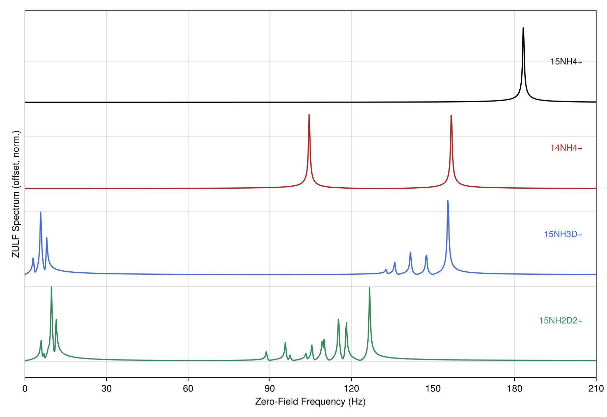
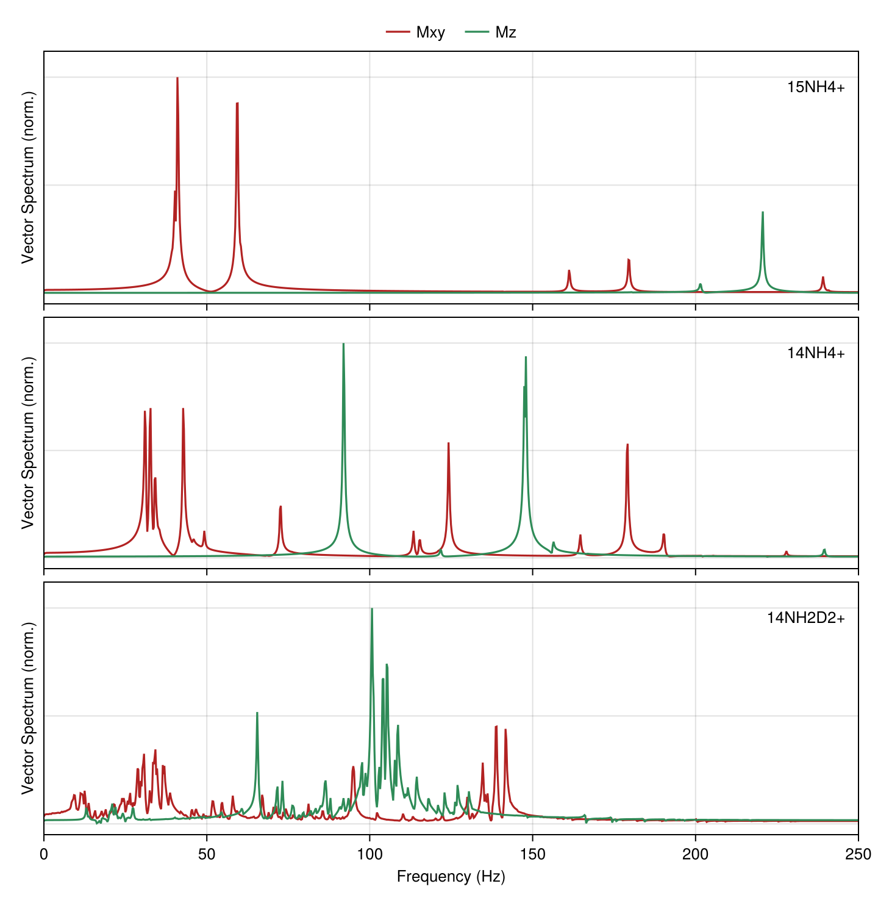

Zero- and Ultralow-Field (ZULF) Simulations
At zero to ultralow field (nanotesla to roughly millitesla), the nuclear Zeeman interaction is comparable to or weaker than the J-couplings, so the high-field ordering inverts: J ≳ |Δω|. The high-field approximations that general NMR simulation relies on fail here, each with its own ZULF replacement.
The High-Field Assumptions and Their Replacements
At high field ω_0 ≫ J, so every coupling is a perturbation on the Zeeman term. At ZULF that ordering inverts and each high-field shortcut breaks:
| High-field assumption | Fails because | ZULF replacement |
|---|---|---|
Secular coupling (ising, ZZ only) | the coupling rivals the shift dispersion | full isotropic jcoupling |
Total-S_z eigenspaces | Zeeman no longer dominates | total-spin F / permutation symmetry |
| Zeeman-secular relaxation | the eigenbasis is the coupling's | eigenbasis redfield_jumps |
| RWA (Tavis-Cummings) | collective g rivals ω_0 | keep the counter-rotating terms |
The eigenstates are now the full coupling Hamiltonian's (the singlet/triplet manifold of a pair, total spin F for a group), so which transitions appear follows the total-spin states, not high-field selection rules.
Full Isotropic Couplings
Use the full isotropic coupling jcoupling (2π J I_i·I_j = 2π J (XX + YY + ZZ)/4), not the secular ising (ZZ only). The secular truncation that makes ising valid requires |Δω| ≫ J, which fails at ZULF: at zero field a J-coupled pair is a singlet/triplet system, and only the full dot coupling captures the singlet/triplet mixing that drives the dynamics.
using RestrictedSpinDynamics
N = 2
H = hamiltonian(jcoupling(N, 1, 2, 5.0)) # 2π·5 Hz isotropic coupling; NOT ising
basis = restricted_basis(N, N) # strong coupling populates grade 2, so keep it
L = build_liouvillian(basis, H)
c0 = state(basis, singlet(1, 2)) # parahydrogen singlet order
res = propagate(basis, L, c0, 0.0:0.01:1.0; observables = ["S" => singlet_op(N, 1, 2)])Add zeeman with small offsets for a residual or guiding field. Homonuclear spins stay strongly coupled down to zero field; a large heteronuclear Δγ can decouple partially, where the dominant-field relaxation presets regain some validity. Strong coupling spreads population across correlation orders, so a ZULF system needs a higher grade than its high-field equivalent; validate with a full (kmax = N) run at small N before truncating (see Grade Truncation and Polynomial State Space Scaling).
Total-Spin and Zero-Quantum Sectors
With isotropic couplings and no field, the Hamiltonian commutes with the total spin, so the dynamics stay in a definite total-coherence sector. Two exact reductions capture this, both keywords of restricted_basis (see Basis & Symmetry):
- Coherence order (
weight): a ladder basis of definiteΣ q. Parahydrogen singlet order and the low-field transfer it drives live in the zero-quantum (weight = 0) block, a large exact saving. The symmetry-based ZULF-SABRE framework of Markelov, Snadin, Kiryutin, Barskiy, Yurkovskaya (2026) uses the total-spin symmetry shared by the Hamiltonian, relaxation, and exchange to restrict rigorously to exactly this zero-quantum subspace, scaling to a 14-spin complex. - Site permutation (
symmetry): magnetically equivalent spins fold ontoSpinClassesorbits; a group ofnidentical spins collapses to a dimension independent ofn.
Together these keep multi-spin ZULF problems tractable.
The two reductions behave differently under a pulse. A transverse field or ramp changes coherence order by ±1, so it leaves the weight/parity sector (exact only for a static, longitudinal Hamiltonian). A uniform pulse is permutation-invariant, so the symmetry (total-spin) reduction survives it, carried through exactly by propagate_sequence / propagate_modulation. For the coherence structure under a drive, drop weight and prune with the schedule-aware reachable basis (reachable_basis / propagate_sequence_adaptive; see Reachability, Control, and the Adaptive Basis).
Relaxation in the Coupling Eigenbasis
The relaxation model is where ZULF most often goes wrong. The Zeeman-secular backends (the Solomon dipolar, CSA, and scalar rates behind DipolarRelaxation / CSARelaxation / ScalarRelaxation) assume ω_0 ≫ coupling and take the secular approximation in the Zeeman frame; at ZULF that frame is wrong, so those rates are wrong. Use redfield_jumps instead: it diagonalizes the full coherent Hamiltonian and builds the jumps in its eigenbasis, so the secular approximation is taken where the eigenstates actually are.
A = [spin_op(N, 1, 3), spin_op(N, 2, 3)] # system-bath coupling operators (here I_z on each spin)
jumps = redfield_jumps(H, A, BPP(1e-9), N) # eigenbasis Redfield, τc = 1 ns; method = :davidovic (CP)
L = build_liouvillian(basis, H; jumps = jumps)method = :davidovic (default) is completely positive by construction; :nathan_rudner is the non-secular Universal Lindblad form. Both reduce to the ordinary secular result for well-separated frequencies, so one model stays correct as you sweep the field from high to zero.
To read a rate rather than propagate, feed L to initial_rate (the T1/T2 slope, or a cross-relaxation-matrix row for a vector of observables), sweep it with rate_vs_field, or take the fixed point with steady_state. There is no closed-form ZULF rate the way solomon_rates gives the high-field σ/ρ; at ZULF it is read numerically from the eigenbasis-Redfield generator. Stay on the eigenbasis-Redfield rung or above; see Relaxation Backends for the full taxonomy.
Higher-Spin Nuclei at Zero Field
Many ZULF-relevant nuclei are not spin-1/2. Deuterium (²H) and nitrogen (¹⁴N) are spin-1, and their quadrupolar coupling is an electric-field-gradient interaction independent of the applied field. At zero field it sets the dominant energy scale rather than perturbing the Zeeman term, and the high-field secular picture breaks the same way the coupling one does. Keep the full quadrupolar term (quadrupole / quadrupole_hamiltonian) rather than a secular truncation. Set the spin dimension with the radix keyword (or derive it from the isotopes with a SpinSystem); the composers each take a radix:
d = [3, 2] # a spin-1 (d = 3, e.g. ²H) coupled to a spin-1/2
basis = restricted_basis(2, 2; radix = d)
H = hamiltonian(jcoupling(2, 1, 2, 5.0, d), # isotropic J, the full dot coupling as above
quadrupole(2, 1, d; nu_q = 2π*50.0)) # field-independent quadrupolar term on the spin-1
jumps = relaxation_jumps(QuadrupolarRelaxation([1], 2π*0.5; ω0 = 2π*1.0, τc = 5e-2), 2, d)
L = build_liouvillian(basis, H; jumps = jumps)
c0 = state(basis, polarized(1, :z; m = 0.1), mixed(2))Quadrupolar relaxation uses the closed-form QuadrupolarRelaxation model (channel builder quadrupole_relaxation) at high field, or, for the non-secular ZULF regime, the eigenbasis redfield_jumps route, which takes tensor operators and a radix for spin $\ge 1$ (thermalized davies_jumps and kossakowski_matrix cross-correlation carry over too). See Higher-Spin for the tensor conventions and the rank-resolved DLA.
The Ammonium Isotopologue Series
Full isotropic couplings, the zero-quantum sector, and total-spin symmetry together produce the zero-field spectrum of a real system; the ammonium isotopologues are the worked example. The only parameter is the one-bond coupling 1J(15N,1H) = -73.3 Hz, from which every other coupling follows by the exact isotope relation J(X,Y) = J0 (γX γY)/(γ15N γ1H). Each ion is prepared in proton order and read out at zero field as the OPM signal Σ γ_i ⟨Iz_i⟩; its Fourier transform is the J-spectrum.

Each isotopologue's fingerprint is set by its symmetry and spins. Fully symmetric 15NH4+ shows a single line near 2.5|J|; spin-1 14N moves and splits it toward 2|J| and 3|J|; each deuteration lowers the proton symmetry and adds smaller N-D/H-D couplings, so 15NH3D+ and 15NH2D2+ grow richer multiplets. The spin-1 nuclei route to the higher-spin tensor basis; the spectra are exact (full grade).
The worked computation takes one isotopologue (15NH3D+). A vector OPM records all three local components. At zero field the coupling is isotropic: with proton z-order only Mz oscillates (the J-spectrum) and the transverse components stay zero. A small z-guiding field and a proton pi/2 excitation (the ultralow in ZULF) tip the order into the plane, so all three then carry signal.
using RestrictedSpinDynamics
G = RestrictedSpinDynamics.ISOTOPE_GAMMA
jbond(a, b) = -73.3 * (G[a] * G[b]) / (G["15N"] * G["1H"]) # one-bond J from the isotope relation
iso = ["15N", "1H", "1H", "1H", "2H"] # 15NH3D+; the 2H (spin-1) routes to the tensor basis
N = length(iso)
cpl = [(1, 1 + k, jbond(iso[1], iso[1 + k])) for k in 1:4]
ss = SpinSystem(iso; shifts = zeros(N), couplings = cpl) # zero shifts = zero field
b = restricted_basis(ss, N) # full grade = exact
rad = spin_radix(ss)
c0 = state(b, polarized(2:N, :z)) # proton order, dropped from high field
opm(ax) = reduce((u, v) -> mergewith(+, u, v), # OPM component along ax: γ-weighted collective I_ax
Dict(p => ss.gammas[i] * c for (p, c) in spin_op(N, i, ax, rad)) for i in 1:N)
# zero field: only Mz is live -> the J-spectrum
sz = propagate(b, build_liouvillian(b, hamiltonian(ss)), c0, 0:2e-3:4;
observables = ["Mz" => opm(:z)]).traces["Mz"]
# ultralow field: a z-guiding field (~50 Hz proton Larmor) + a proton pi/2 pulse put signal on all three axes
su = SpinSystem(iso; couplings = cpl, shifts = [G[x] * 1.17e-6 / 2pi for x in iso])
Bp = pi / (2 * G["1H"] * 2.5e-4) # hard proton pi/2 about x, over 0.25 ms
Hx = reduce((u, v) -> mergewith(+, u, v),
Dict(p => ss.gammas[i] * Bp / 2pi * c for (p, c) in spin_op(N, i, :x, rad)) for i in 1:N)
cp = propagate(b, build_liouvillian(b, Hx), c0, [0, 2.5e-4];
observables = ["Mz" => opm(:z)], save_trajectory = true).trajectory[end]
vec = propagate(b, build_liouvillian(b, hamiltonian(su)), cp, 0:2e-3:4;
observables = ["M$ax" => opm(ax) for ax in (:x, :y, :z)])Each spectrum is abs.(rfft(·)). At zero field sz holds the J-spectrum and the transverse components stay zero. At ultralow field the transverse pair coincide (circular precession about the guiding field), so the figure plots their magnitude sqrt(Mx^2 + My^2) over the longitudinal Mz:

Vector readout, one panel per isotopologue (15NH4+, 14NH4+, 14NH2D2+) over 0 to 250 Hz. The transverse magnitude sqrt(Mx^2 + My^2) carries the J-split proton-Larmor multiplet; longitudinal Mz carries a distinct lower set. The structure grows richer from 15NH4+ through spin-1 14N to 14NH2D2+.
The two figures and their data (data/zulf_spectra/ammonium.csv for the zero-field series and ammonium_vector.csv for the vector readout) are produced by the ammonium ZULF script in the repository's scripts/ tree.
Strong Collective Coupling
This is the RWA replacement applied to a collective term. At ZULF the individual spin frequencies are small, so collective effects that are negligible at high field can dominate. Many spins coupling to a shared mode (a tuned detection coil through radiation damping, a common reservoir in collective SABRE) can rival or exceed the spin frequencies, the strong and then ultrastrong regime where RASER and superradiance live: N spins behave as one giant spin with the coupling concentrated in the symmetric bright state (a √N enhancement). The package exposes the collective operators (collective_pm, total_spin_op), the collective leakage channel (superradiance_leakage), and the radiation-damping / RASER self-drive as a state-reading drive + Selective gain stepped by propagate_modulation. The regime is numerically demanding on two fronts:
- Keep the full coupling and a sufficient grade. Once
g ~ ω_0the counter-rotating terms carry real frequency shifts that the Tavis-Cummings truncation drops, and strong collective coupling builds high-order correlations fast, so the DLA may not close: checkdla_reportand lean onSpinClassessymmetry. - Read stability and the lasing threshold off the right tools. These Liouvillians are strongly non-normal, so use the transient tools of Spectral (Contour) rather than an eigendecomposition, and locate the nonlinear RASER onset with
fixed_point/linearize/feedback_threshold.
Field Cycling and SABRE
Field ramps (field cycling, SABRE-SHEATH, level-anti-crossing transfer) and parahydrogen-to-substrate SABRE are field-manipulation and chemical-exchange techniques rather than ZULF simulation specifics. Ramp B(t) with propagate_timedep and field_ramp, stepping finely enough to resolve an anti-crossing; drive SABRE as a two-compartment dissolution / re-association network built from exchange edges (see Chemical Exchange & Stochastic Liouville). A ramp breaks the weight sector, so keep only the symmetry reduction through it, or restrict per piecewise-constant segment. To map transfer against field (a SABRE-SHEATH or level-anti-crossing profile), sweep the generator with sweep_field and a steady_state readout: make_L(B) rebuilds the J-coupled drift with its field-dependent Zeeman plus the exchange jumps at each point.